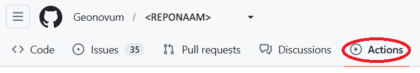
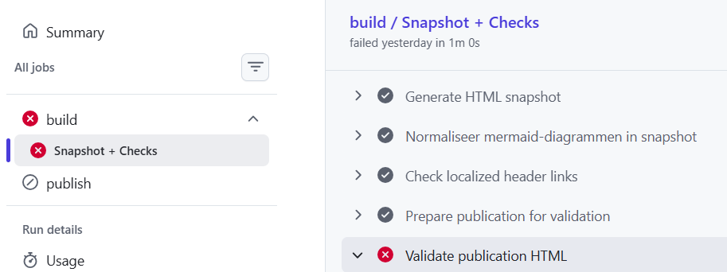
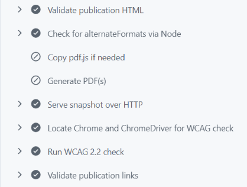
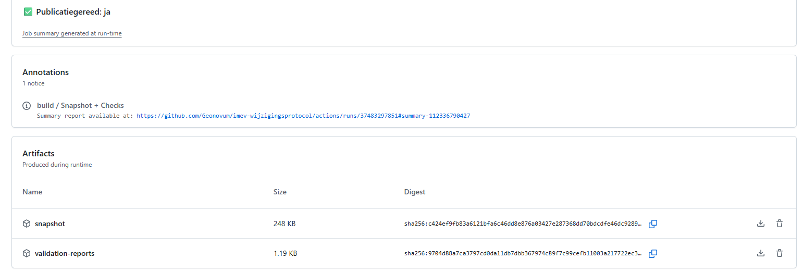
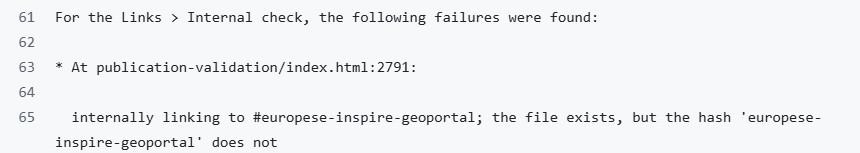

Fouten bij push oplossen
Zie ook: README bij Geonovum ReSpec template.
Uitgangspunten - structuur van de repository
-
de folderstructuur van de repository waarin het ReSpec document staat, moet conform de Geonovum ReSpec template zijn
-
dat wil zeggen,
index.htmlin de root folder,config.jsin/jsfolder,- afbeeldingen e.d. in
/mediaen/of/datafolder (+ subdirectories zoalsImages); Note zet géén andere bestanden onder/mediaen/of/datafolder (+subdirectories) aangezien deze dan ook mee gaan bij het publiceren.
-
de github repository mag maar één ReSpec document bevatten.
Soort controles welke uitgevoerd worden
Er zijn 3 soorten controles.
- Proof HTML, 'Validate publication HTML'. Dit is een algemene HTML controle voor:
- Favicon,
- Images,
- Links,
- OpenGraph,
- Scripts
- WCAG check, 'Run WCAG x.x check'. Dit is de controle op webtoegankelijkheid regels, denk aan visuele beperkingen. Dit resuleert in een WCAG rapport.
- Lychee publication links, 'Validate publication links'. Dit is een controle van verwijzingen.
Proof HTML en de Lychee-linkcontrole zijn blokkerend en bepalen het resultaat van Publicatiegereed: ja/nee. ✅ is goed. ❌ niet.
Controle resultaten terugvinden op Github
-
De resultaten van de controles zijn te vinden onder 'Actions' op Github.

-
Kies hier de commit die je gedaan hebt, en klik voor details op 'build > Snapshot + Checks'. Dit geeft de 'Snapshot + Checks' stappen. Grijze vinkjes zijn oké. Rode kruisen vragen om aandacht voor zaken om op te lossen.


-
publicatiegereed ja/nee? evt. artefacts (artifacts) bekijken

Typische fouten die gevonden worden (met oplossing)
-
referentiefout id (#
<id>waarvan er geen element is met id="<id>").

-
protocol ontbreekt in url, bijv.
https://. Meldinginternally linking to docs.geostandaarden.nl/xxx/yyy/, which does not exist. -
error: Duplicate ID “xxx”., dubbele id's, bijvoorbeeld meerdere keer id="col1" bij tabellen gegenereerd bij word2respec, of door kopieeractie. -
ongeldige html-tags, bijvpoorbeeld
<h7>of<alias>. Dit is typisch voor een oudere imvertor-versie. Oplossing is om opnieuw output met imvertor te creëren. (begin oktober 2026: gebruik nightly-build)